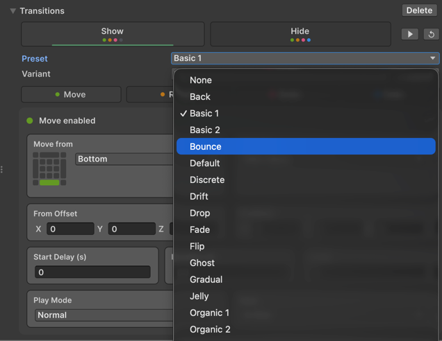
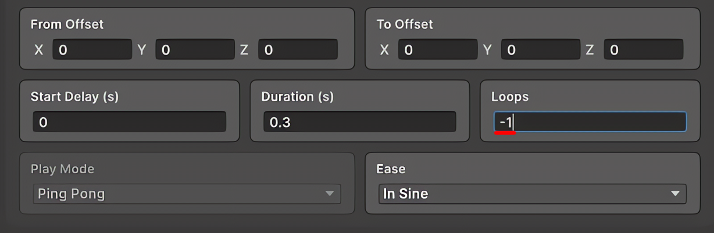

전환 애니메이션
NavElement은 서로 독립된 Show와 Hide 전환을 가집니다. 각 전환은 Move, Rotate, Scale, Fade Channel을 조합하며 LitMotion이 기본적으로 Realtime Scheduler로 재생합니다.
Popup도 같은 전환 시스템을 사용하지만 Backdrop과 Content를 별도 Layer로 설정합니다.
Preset으로 시작
UI Builder Inspector에서 다음 순서로 설정합니다.
NavElement를 선택하고 Transitions를 엽니다.- Show 또는 Hide 탭을 선택합니다.
- Preset Category와 Variant를 선택합니다.
- Apply를 누릅니다.
- Move, Rotate, Scale, Fade Card를 열어 복사된 값을 조정합니다.
- Play Icon으로 현재 탭을 Preview하고 Reset으로 On Start 상태를 복원합니다.

Apply를 누르면 선택한 Preset이 현재 Channel 값으로 복사됩니다. Preset Block이 Focus를 잃으면 Category는 None으로 돌아가지만 복사된 Channel 설정은 남습니다. 따라서 Preset은 고정된 Style이 아니라 세부 조정을 위한 출발점입니다.
UXML을 직접 작성할 때는 preset-category와 1부터 시작하는 preset-variant를 Runtime 설정으로 유지할 수도 있습니다. 수동으로 활성화한 Channel은 해당 Preset Channel을 덮어씁니다. 범위를 벗어난 Variant는 적용되지 않습니다.
내장 Preset Library
패키지에는 21개 Category와 351개 Variant가 있습니다. 각 Variant는 별도의 Show와 Hide 정의를 포함합니다.
| Category | Variant | Category | Variant |
|---|---|---|---|
| Back | 8 | Basic1 | 25 |
| Basic2 | 25 | Bounce | 15 |
| Default | 1 | Discrete | 20 |
| Drift | 10 | Drop | 15 |
| Fade | 25 | Flip | 10 |
| Ghost | 10 | Gradual | 12 |
| Jelly | 10 | Organic1 | 25 |
| Organic2 | 25 | Rotate | 25 |
| Shake | 10 | Slide1 | 25 |
| Slide2 | 25 | Spin | 10 |
| Zoom | 20 |
전환을 완전히 수동 Channel로 구성하려면 None을 사용하세요. Preset Variant 번호는 1부터 시작합니다.
Animation Channel
| Channel | UI Toolkit Style | 주요 값 |
|---|---|---|
| Move | translate |
From/To 기준, Direction 또는 Custom Pixel Position, Offset |
| Rotate | rotate |
From/To Z축 각도와 Offset |
| Scale | scale |
From/To Vector2 Scale과 Offset |
| Fade | opacity |
From/To Opacity와 Offset |
Move는 Left, Top, BottomRight, MiddleCenter 같은 방향과 Custom Position을 제공합니다. 이동 거리는 부모의 Content Rectangle과 Element의 Transformed Bounds를 기준으로 계산합니다.
Note
UI Toolkit 회전은 2D입니다. Z축만 적용되며 원본 Preset의 Y축 회전은 사용할 수 없습니다.
Reference Value
각 From과 To에서 다음 기준을 선택합니다.
| Reference | 의미 |
|---|---|
| Start Value | Channel이 Capture한 Rest/Start 값 |
| Current Value | 전환을 준비할 때 해석된 Style |
| Custom Value | 직접 입력한 값 |
Offset은 해석된 기준값에 더해집니다. Animator가 적용한 Transform Inline Style은 완료 후 제거되므로 최종 Rest Layout은 UXML 또는 USS에 정의하세요.
Timing과 Playback
활성화한 각 Channel은 자신만의 설정을 가집니다.
| 설정 | 동작 |
|---|---|
| Delay | Channel 시작 전 대기; 0 이상 |
| Duration | 1 Cycle의 길이; 기본 0.3 초 |
| Ease | LitMotion Ease 또는 Custom Animation Curve |
| Play Mode | Normal, Ping Pong, Spring, Shake |
| Loops | 추가 반복: 0은 1회, 1은 총 2회, -1은 무한 반복 |

모든 활성 Channel은 병렬로 재생됩니다. 가장 긴 유한 Channel이 Show 또는 Hide의 완료 시점을 결정합니다. 무한 Loop는 Ping Pong으로 고정되며 완료를 보고하지 않습니다.
Caution
수명 주기가 종료되어야 하는 전환에 Loops = -1을 사용하지 마세요. 무한 Show는 ShowFinished와 Auto Hide를 막고, 무한 Hide는 View가 닫히지 않거나 Popup Completion Task가 끝나지 않게 할 수 있습니다.
기본 Scheduler는 MotionScheduler.UpdateRealtime입니다. 따라서 Time.timeScale이 0이어도 Animation과 Graph Time Delay 출력은 계속됩니다.
중단과 반전
UIViewVisibility는 NotVisible, Showing, Visible, Hiding 상태와 연속 Progress를 관리합니다. Show 중 Hide, Hide 중 Show가 요청되면 처음부터 다시 재생하지 않고 대칭 Progress에서 반대 전환을 시작합니다. 빠른 화면 이동에도 자연스럽게 반응합니다.
LitMotion이 활성인 동안 Animator는 Element의 USS transition-duration을 임시로 억제하고 완료 후 복원합니다. 두 Animation System이 같은 Style을 두고 충돌하는 것을 막습니다.
Hide Mode
| When Hidden | 결과 |
|---|---|
| Display | display: none; View를 Layout에서 제거 |
| Visibility | display: flex를 유지하고 visibility: hidden; Layout 유지 |
두 Mode 모두 숨겨진 동안 Picking을 무시합니다. Move, Rotate, Scale은 UsageHints.DynamicTransform, Fade는 UsageHints.DynamicColor를 자동으로 요청합니다.
0.3.1의 Animation 소유 구조
UIViewVisibility가 Show와 Hide UIAnimation 설정을 직접 소유합니다. 구형 UIAnimationPreset ScriptableObject와 UIViewVisibility.Preset 프로퍼티는 0.3.1에서 제거됐습니다. 재사용할 Category/Variant 값은 UXML Template이나 Editor Tooling에서 복사해 구성하세요.